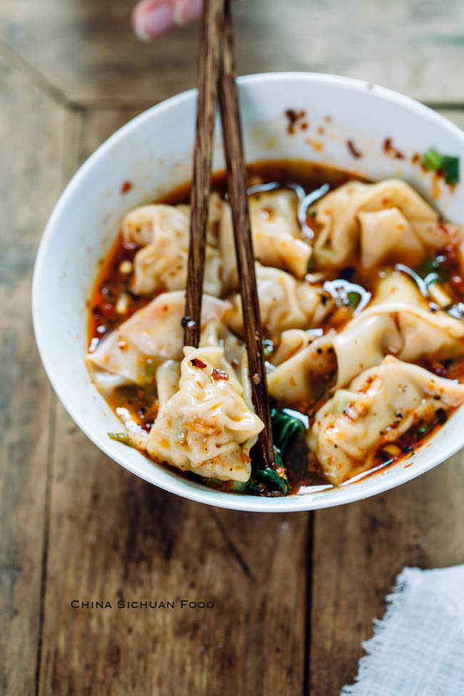

Description
Homemade Wonton Soup with a dose of Sichuan magic. Meat filled Wonton dumplings in a vibrant Sichuan soup with its signature reddish hue. Amazing! Let us begin!
Ingredients to start with
For the wonton (enough to make 50 wontons)
- 12 oz 340 grams of ground chicken
- 1.5 tsp of grated ginger
- 1.5 tsp of grated garlic
- 1.5 tbsp of soy sauce
- 1 tbsp of oyster sauce
- Some black pepper to taste
- 7 oz 200 grams of freshly shredded zucchini (season with some 1/2 tsp of salt and squeeze the liquid out )
- 1 tbsp of sesame oil
- 1/3 cup of diced scallion
- 1 pack of wonton skin
To cook the wonton
- 6-8 cups of chicken stock or water
- Baby Bok choy or other leafy vegetables depending on your preference
To assemble the wonton soup (1 serving)
- 2 cloves of garlic
- 1/2 tsp of sugar
- 2 tsp of soy sauce
- 2 tsp of oyster sauce
- 2 tsp of Chinese black vinegar
- Sichuan pepper corn powder to taste
- 1-5 tbsp of chili oil depending on your taste
- 1/2 cup of the broth that you cook the wonton with
10-12 pieces of wonton
- Diced cilantro as garnish
- Diced scallion as garnish
Steps to make it!
- 1. Shred the zucchini by using the largest holes on your grater. Season with 1/2 tsp of salt and rub for a minute.
- 2. Let it sit for 10 minutes to allow the salt to draw out the moisture. Squeeze most of the liquid out of the shredded zucchini.
- 3. In a big mixing bowl, combine the following ingredients: 12 oz of ground chicken, 1.5 tsp of grated ginger, 1.5 tsp of grated garlic, 1.5 tbsp of soy sauce, 1 tbsp of oyster sauce
and some black pepper to taste. Stir the filling within one direction for 3-5 minutes to develop the texture of the filling.
- 4. Continue by adding the zucchini, 1/3 cup of diced scallion, and a drizzle of sesame oil. Mix well and your filling is done.
- 5. To wrap the wonton, put some filling in the middle of the wrapper. Dip some water with your finger and wet half of the wrapper. Fold it in half. Pack it tight. Be sure to push
out all the air. Make a small curve in the middle so it is easy to fold. Then you glue the two sides and pinch them together.
- 6. Before we cook them, we need to make the spicy flavor base. In a bowl, add the following ingredients: 2 cloves of garlic, press them through a garlic presser; 1/2 tsp of sugar,
2 tsp of soy sauce, 2 tsp of oyster sauce, 2 tsp of Chinese black vinegar, some Sichuan peppercorn powder to taste, and 1-5 tbsp of hot chili oil depending on your taste.
- 7. Stir the wonton once every 20 seconds. It takes about 2 minutes for the wonton to float to the top of the water, then moniter the heat at low and keep the pot at a slight simmer
for another 5-6 minutes. Do not let the water boil violently, otherwise the wonton will start expanding and the skin will break.
- 8. When it is almost ready, add some green leafy vegetables that you like; I am using baby bok choy. Let it blanch with the wontons for 20 seconds to a minute depending on your preference.
- 9. Turn off the heat. Scoop out about 1/2 cup of the broth and pour it into the flavor base. Follow up with however many pieces of wonton that you want.
- 10. Sprinkle some diced scallion and cilantro on the top. Now you are ready to enjoy this mouthwatering Sichuan Chao Shou. The filling is tender and juicy, and the chili oil is
fiercely spicy, numbing, and super aromatic. I am sweaty already with just a few wontons but it is hard to stop eating...